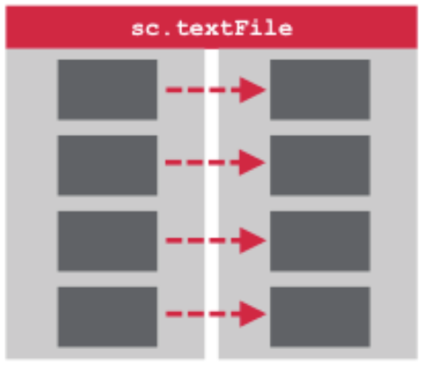

<h2>Load Source</h2>


<div class="common config all">
<pre>
<code class="scala code">val inputRDD = sc.textFile("sfpd.csv")
</code></pre></div>

<div class="thanks"><a href="http://learn.mapr.com/dev-361-build-and-monitor-apache-spark-applications">from mapr dev361</a></div>


<div class="notes">Press the P
key to access the notes console.
</div>

